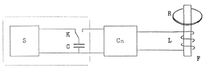

IYPT 1993 Problems
Problems for the 6th IYPT 1993
1. Think up a problem yourself
Invent a problem in which an object is moving in some way and then changes its state of motion abruptly as a result of some influence. In this process interesting phenomena may arise which you must explain by, for example, making experiments and performing the necessary calculations.
2—5. Gravitation
Imagine that the gravitational constant G decreases slowly from April 1, 1993 until May 1, 1994 by 10% and keeps this value afterwards. How would this process in the given time interval and up to the date of the VI International YPT opening affect the universe as a whole and, in particular,
2. the Sun;
3. the Earth;
4. aviation and astronautics;
5. things important for you personally.
6. Gagarin’s record
In April 1961 Yury Gagarin set a world record for the fastest round-the-world orbit space flight. Suggest the cheapest way of beating this record. Note that not every record may be officially recognized.
7. Pressure and temperature
Explain why the pressure inside a house and outdoors are practically the same or become equal briefly, while the temperature may be substantially different. What is the characteristic equalizing time for pressures and temperature in- and outdoors? What is the answer to this question in the case of spacecraft?
8. Dominoes
Dominoes are placed vertically at a small distance from each other in a long row on a table surface. Make the first domino fall and the “wave of the falls” will proceed along the row. Calculate and measure experimentally the maximum speed of this wave.
9—10. Gun
The picture shows an electromagnetic gun circuit. It can launch metal rings.

(S, C, K) is a power supply consisting of
S, a source of constant voltage in the range 10—300 V,
C, a capacitor with C=1000 μF,
K, a switch;
L is an induction coil;
F is a ferromagnetic core;
R is a metal ring projectile with mass from 1 to 100 g.
Cn is a converter (some device that converts the energy passing from the capacitor to inductance L in a way you need.) This element does not contain energy sources. It may be completely absent from your gun.
You are to construct, make and demonstrate the electromagnetic gun. It is worth mentioning that the demonstration of your gun will take place with the power supply (elements S, C and K) presented by the Organizing Committee of the YPT. Develop two variants of the gun:
9. A long-range gun is to be constructed to shoot a ring to a maximum altitude. The control parameter is the quantity H=kh/U2, where k=10000 V2, h is the height of the projectile, U is the voltage to which the capacitor is charged.
10. A gun-lift is to be constructed to achieve the maximum work of lifting a weight (ring). The control parameter is W=mgh, where m is the mass of the ring, g=10 m/s2.
11. Recharge
You are given a capacitor C=1000 μF charged to 10 V and an uncharged capacitor Cx=1 μF. Using a self-constructed device containing no energy sources charge the capacitor Cx to the maximum possible voltage.
12. Transmission of energy
You are given a capacitor C=1000 μF charged to 300 V. Transmit without wires to a distance of 5 meters the largest possible proportion of the energy stored in the capacitor and measure it. Your device should be without energy sources.
13. Microwave oven
Why it is not recommended to cook eggs with unbroken shells in a microwave oven?
14. Boiling
A metal ball at room temperature is plunged into a thermos filled with liquid nitrogen. Describe the observed process of intense vaporization of nitrogen and find the time dependence of vaporization intensity q(t) [gs−1]. We ask you to use balls from 2 to 4 cm in diameter.
15. Fence
A picture of a moving bicycle wheel is strongly distorted by being observed through a fence. How much is the wheel distorted and why?
16. Grand Unification
According to modern views Grand Unification is possible at energy of about 1024 eV. Estimate the parameters of an accelerator capable of producing particles of such energy.
17. Karate
Karate is power, speed, force and beauty! Develop objective quantitative criteria making it possible to confer a “black belt” to a karate fighter. Maybe, you’ll become the inventor of a BB (black belt) device badly needed by referees or you’ll create a KM (karate meter) complex which is even more necessary for karate fighters for improving their skill.